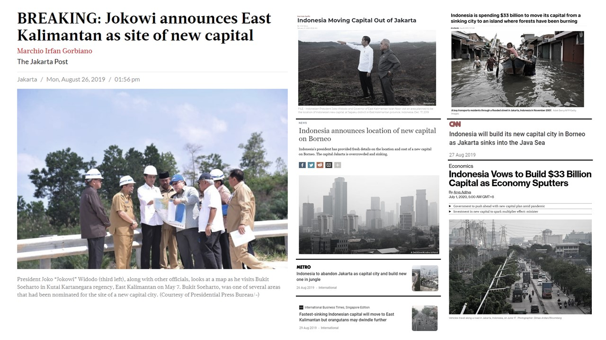
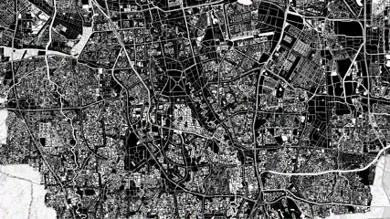
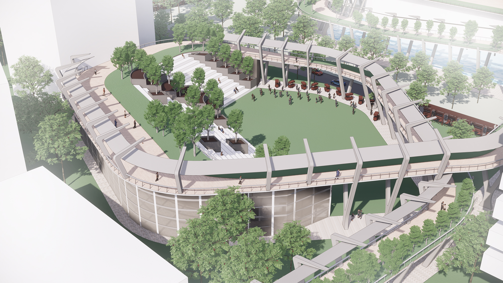
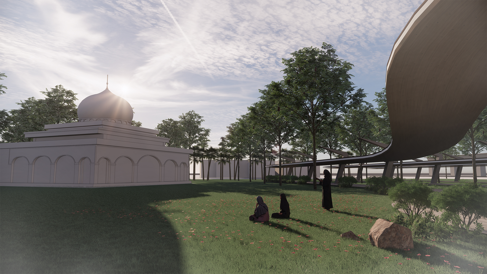

JAKARTA 2027
Summary
On 26th Aug 2019, Indonesia’ President Joko Widodo announce the plan to relocate the capital city from Jakarta to East Kalimantan. The relocation will be removing Jakarta from being the political centre of Indonesia, yet the city will remain as the country’s main commercial hub. By 2024, the central government buildings in Jakarta will be vacated and civil servants will be moved to the New Capital. Understanding impact this would have on people in Jakarta, this thesis proposes a new vision for a city that is seeking to find its new identity. This project attempts to propose an framework that address the social and environmental issues for the commercial capital of Indonesia.About Me
A fresh architecture graduate who possesses strong interest in social and environmental-friendly building design and technology. He believes in "Architecture Saving Our World" where architecture is about new ideas and responsible designs that benefit the environment and society. Equipped with strong skills and multi-discipline knowledge, Edison is always open to new challenges in every project involved.Name
Edison
Mentor
Chong Keng Hua
Typology
Social, Ecology
Site Location
East Kuningan,
South Jakarta

![]()
![]()

Responses
The announcement of the relocation project has prompted various responses from different group of people, public figure, and renowned academia. Some of the response criticised the move, such as the professor from University of Indonesia saying that if Jakarta is damaged, it must be repaired, not run away from the problem. Another politician (Fahri Hamzah) said that there are too many historic legacies and historical memories from Bung Karno, our first president to be left from this city. While Anies Baswedan, the Governor of DKI Jakarta explore on the possibility of turning these assets into open green spaces that could benefit the community. Thus, the relocation of the capital of Indonesia project has prompted questions such as:1. What will happen to the government buildings after the relocation?
2. What will happen to the 3.7 million informal workers in Jakarta that depends their livelihood on. Removal of the political centre will disconnect the government from them and how will the future policy making, or urban planning be considerate towards them?
3. Lastly, with the removal of the political centre from Jakarta, how will this city’s identity and culture change? And how it will affect the policy and urban design of the city in the future?

First, the introduction of Green Network, to enhance the overall ecological sustainability rather than leave it by chance to have pockets of green spaces leftover. With that we can put together a new kind of green future for entire Jakarta. Leveraging space leftover by the government building by the relocation. Creating urban green ribbon binds the urban oasis together.
Second, some of the green network overlay with existing street economy. If nothing is done, many of them will be gentrified and displaced and it will largely impact the lower income group. This is what we don’t want to see. Thus, the next strategy look into how to preserve the informal street economy and formalising or maybe acknowledge their existence and enhance their synergy with local ecosystem.
Third, a lot of the buildings will be vacated, thus the next strategy is looking into re-adapt some of these modernist government building, injecting them with new program that could create new job opportunity by tapping into the local culture and economy.
Jakarta Green Ribbon
Three main strategies in the masterplanFirst, the introduction of Green Network, to enhance the overall ecological sustainability rather than leave it by chance to have pockets of green spaces leftover. With that we can put together a new kind of green future for entire Jakarta. Leveraging space leftover by the government building by the relocation. Creating urban green ribbon binds the urban oasis together.
Second, some of the green network overlay with existing street economy. If nothing is done, many of them will be gentrified and displaced and it will largely impact the lower income group. This is what we don’t want to see. Thus, the next strategy look into how to preserve the informal street economy and formalising or maybe acknowledge their existence and enhance their synergy with local ecosystem.
Third, a lot of the buildings will be vacated, thus the next strategy is looking into re-adapt some of these modernist government building, injecting them with new program that could create new job opportunity by tapping into the local culture and economy.


Design Proposal
An Urban Green Ribbon that binds urban oasis together that leverage on vacated existing government buildings that are re-programmed into different building typology and connect to larger urban green network. In each development, the Green Ribbon extend beyond being elevated pedestrian platform, it is also an urban infrastructure that expand into buildings and public spaces that support the local informal economy and community that promote synergy to achieve new urban sustainability.Activity Plaza
Entrance Garden that welcome visitors upon exiting the LRT station. The terracing allow you to move from the platform or the roof to the street level.

Entrance Garden
The Green Ribbon extend itself into studio and workshop block while the open plaza allow the street vendors to push their food carts selling food to the students. While the terracing allow people the sit and rest and can be easily converted into audience seating when there is event going on.Sports Park
The sport park allow people from different socio-economic backgrounds to come and interact with each other, while opening up to the adjacent food street supporting the local informal economy.
